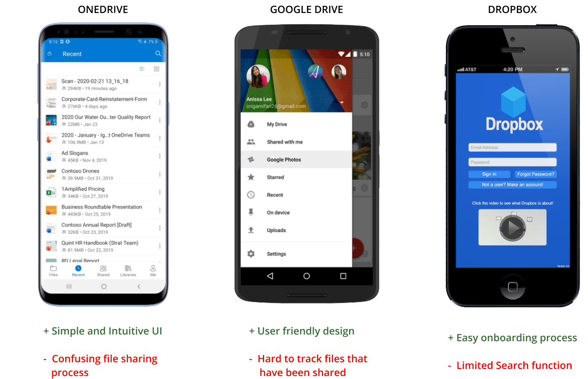
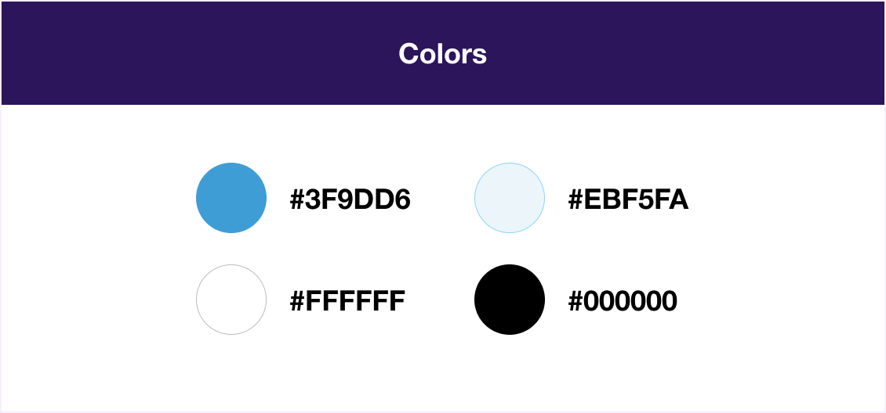
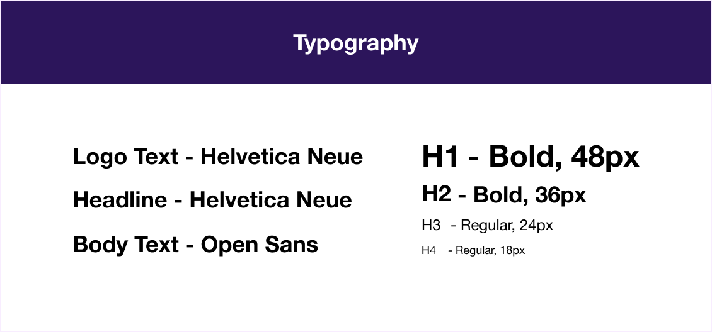
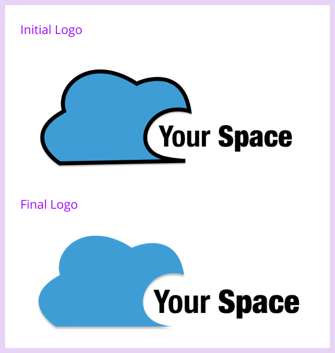

Your Space is a cloud storage application that can help users create, upload,organize and store their data, as well as collaborate with others in a simple and effective way.
 VIEW PROTOTYPE
VIEW PROTOTYPE
Problem
In today’s world cloud service is the most suitable option to store data online digitally. Currently there are multiple cloud storage apps available to users but most of these platforms have confusing task management solutions and cluttered dashboards. They lack simplicity and visibility when users try to create, organize and search for specific stored content.
Solution
Your Space aims to create a simple and intuitive user-friendly experience for users looking to create, upload, organize and share content with others. Users will not only have the ability to save any kind of content, all in one place but can also create their own content, organize their files and share it with others.

Process
User Survey
I started my research with a survey posted online to multiple media platforms, public forums and email contacts. I wanted to understand what people were looking for in a cloud file-storage and sharing application. I also wanted to understand their frustrations and what they currently use for storing information online.
By analysing the results of my user survey I understood that:
- 70% users felt that being able to upload content from the web or their mobile was important to them
- 65% users felt that being able to create content was important to them
- 55% users felt that being able to organize the data they saved was very useful
- To 70% of my participants being able to share or collaborate with others was important
When asked what they disliked the most about the current tools they said:
- “ Difficulty in organizing content “
- “ Difficulty to access stored documents ”
User Personas
At this point I had a better idea of who my target audience were, so based on this I created two user personas.
VIEW PERSONAS
Competitive Analysis
I then started to look at some of the top cloud services on the market today like Dropbox, Google Drive and OneDrive to study their strengths, weaknesses, opportunities and threats. I realized that all these products have their own pros and cons. Example, Dropbox has a very simple and user friendly interface but the low visibility of file types on their dashboard is frustrating. Similarly Google Drive has a very simple and intuitive design but there is no way to keep track of the files users have shared in the past. In case of OneDrive, OneDrive has a very confusing file sharing process. These were all opportunities I saw for my product. Apart from these, I also noticed that all three of them used similar iconography and also had blue as their primary color. So for my product I decided to use a similar visual pattern so that my users could easily familiarise with my product.
 VIEW COMPETITIVE ANALYSISUser Flows
Next I determined user stories and prioritized them based on my understanding of my users needs which I had previously collected from the user survey.
VIEW USER FLOWS

Wireframes And Usability Testing
My next step was to create low fidelity wireframes so that I could visualize all the abstract ideas and concepts that had been outlined so far. Several iterations were made to the initial sketches to improve the design. Once the sketches were finalized , I quickly converted them to digital wireframes and also created a prototype that was used for the first round of usability testing.
Test Result and Iterations
1. When users were signing up for an account, they were quite confused to see a prefilled dashboard. So to reduce this confusion I decided to provide an empty dasboard instead of a prefilled one.

2. For the task where users had to share a folder, most of the test participants found it difficult to identify where the share icon was, so I decided to change the share icon to make it more visible.

Brand Story & Logo Design
After updating my design based on the results of the usability testing, I then proceeded to work on my branding. For this I started by trying to come up with a suitable name for my product. After a lot of brainstorming I decided on the name “Your Space” for my product because this name was very simple and easy to remember and it could immediately convey the message to the users that the product was giving them “their own space” in cloud where they could backup their data and use it any way they want.

Once I had decided on the name for my product, my next thought was about how I could display this name and how my logo was going to be. For that I created several sketches which I continued to iterate until I finally decided on a logo which was perfect for my product.
Color
I chose the color blue for my brand because blue is the color of trust, dependability and commitment and since the main purpose of a cloud storage service is to maintain, manage and backup users data, I wanted my brand to have a color that relates to my brand’s purpose.
Typography
I chose Helvetica Neue as my primary typeface and Open Sans as my complementary typeface because these fonts are neutral and precise and since my product can be used both for personal as well as for professional purposes I wanted my the typeface to suit both categories.
High Fidelity Mockups And Preference Testing
With a better understanding of the design, I took to Figma to create high fidelity mockups for both phone and desktop to solidify the look and feel of the platform. I then conducted a quick preference test to test specific features of my product.

For the signup screen, 100% of my participants chose Option B.

For the screen that showed how confirmation messages shoud be displayed, 95% of my participants chose Option B.
Usability Testing and Visual Design
Prior to updating my design based on the results of the preference test, I did the second round of usability testing. I also had the design reviewd by my peers in the Thinkful community comprised of designers and developers across a variety of experience levels.
Feedback on Logo
One important feedback I received was regarding my logo design. Users felt that my logo would look much better without its black outline. Other feebacks that I received varied from things such as adjusting the size and shapes of buttons, improving the clarity of icons, as well as tweaking my design to give it a more trendy look.
After spending several hours and days producing the reviewed design, the feedback was a breath of fresh air and resulted in my “A HA” moments. This process helped me understand the importance of constantly having another set of eyes review my work and receiving critique and feedback to produce the best results.
 VIEW PROTOTYPE
VIEW PROTOTYPE
Takeaways
Overall, I feel that following the design process helped me stay very focused and also improved the efficiency of my work.
My biggest challenge here was to come up with a suitable layout for my design. Laying out the content in a way that could display all the features in a neat and organized way, at the same time making sure the screens are not getting too cluttered was tricky.
My second challenge was deciding on my brand color , logo and typefaces. Coming up with a suitable name and symbol that would not only represent my brand but that would also relate to my brands purpose was a big challenge.
The usability testing helped me realize that some of the features ( Eg: big size of add button, certain text representations, etc.,) that I had added in my design thinking it would make my design more user friendly, actually did not have the desired effect on real users. But instead several suggestions provided to me by my users actually helped me improve my design.
BACK TO TOP